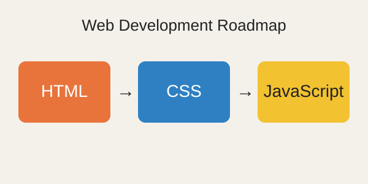
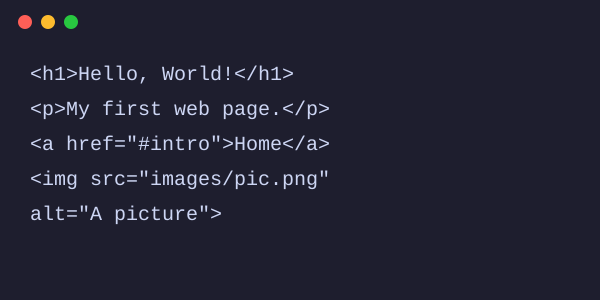

Introduction
When I wrote my first line of HTML, I honestly did not expect much. A few tags, a browser window, and suddenly there was a real web page with my own words on it. That small moment made me curious about how the whole internet is built. Every website you visit, from a simple college portal to a huge shopping app, starts with the same basic ideas.
In this blog I want to share the roadmap I follow as a beginner. It is not perfect, but it is simple, and it has helped me stay consistent instead of jumping between random tutorials.

The Learning Roadmap
Why I start with HTML
HTML stands for HyperText Markup Language. It does not make a page pretty and it does not make it interactive. Its job is to give the page structure: headings, paragraphs, lists, links, images and tables. If the structure is wrong, nothing built on top of it will work properly. That is why I believe every beginner should spend real time on HTML before touching anything else.
Steps I follow
I follow the same order every time I learn something new. Here are my steps:
- Learn the basic structure of a page: doctype, html, head and body.
- Practice headings, paragraphs, lists, links and images.
- Build small pages such as a profile page or a simple blog.
- Learn CSS to control colours, fonts and layout.
- Add JavaScript to make pages react to the user.
- Put everything together in one small project and share it.
The most important rule is to build something after every step. Reading about tags is useful, but typing them yourself and fixing your own mistakes is where the learning really happens.
Tools That Make Learning Easier
You do not need expensive software to start. A computer, a browser and a text editor are enough. Here are the tools I use most often:
- A code editor such as VS Code, which highlights tags and catches typing errors.
- A modern browser like Chrome or Firefox to test every change.
- The browser developer tools, which show how the page is built.
- Git and GitHub to save my work and keep a history of changes.

For reliable explanations, I often read the guides on MDN Web Docs. They are written by experts and are free for everyone.
HTML, CSS and JavaScript Compared
Beginners often mix up the three core web languages. The table below shows what each one does in simple words.
| Language | Main Purpose | Beginner Difficulty | Simple Example |
|---|---|---|---|
| HTML | Structure and content | Easy | Adding a heading or a list |
| CSS | Style and layout | Medium | Changing the colour of text |
| JavaScript | Behaviour and logic | Harder | Showing a message on a click |
Common Mistakes to Avoid
I have made most of these mistakes myself. The first is forgetting to close a tag, which can quietly break the rest of the page. The second is skipping the alt text on images, which makes a page harder to use for people with screen readers. The third is copying code without understanding it. It feels fast, but it slows you down later when something breaks and you have no idea why. Finally, many beginners give up too early. Progress feels slow at the start, but small daily practice adds up faster than you expect.
Conclusion
Web development looks big from the outside, but it becomes manageable when you break it into small steps. Start with HTML, build tiny projects, and add CSS and JavaScript slowly. Use good tools, read trusted documentation, and do not be afraid of mistakes, because every bug teaches you something new. If you enjoyed this post or have suggestions, you can email me. Thank you for reading, and happy coding!